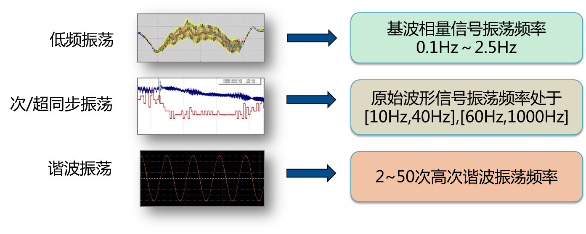
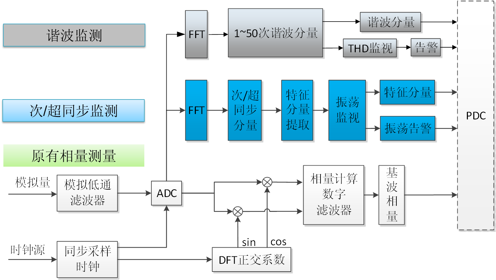

CSD-361宽频测量装置
宽频测量
随着特高压交直流电网与新能源发电的快速发展，电网一体化特征与电力电子化趋势凸显，次同步、超同步等宽频振荡问题逐步显现，电网运行难度与风险不断增大。同步相量测量装置（PMU）具有高采样、高精度、同步快速等特点，对实现宽频振荡监视具有较高的可行性。

实现框图

装置主要功能及特点
- 动态相量、10个次/超同步振荡分量、稳态基波及50次谐波实时测量；
- 低频振荡、次/超同步振荡、谐波振荡实时告警；
- 扩展《电力系统实时动态监测系统传输协议》，支持次/超同步振荡分量、稳态基波及50次谐波监测数据带时标上送；扩展规约兼容现有同步相量传输协议，同步相量数据实时通信传输功能无影响；
- 配置大容量存储器，存储器容量可选，标配容量256GB，最大可支持512GB；标配容量256G可连续记录采样录波文件3天，连续记录相量、功率、频率等数据14天以上，最大可支持30天存储。